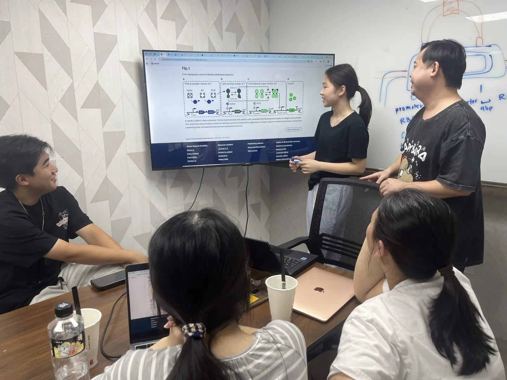
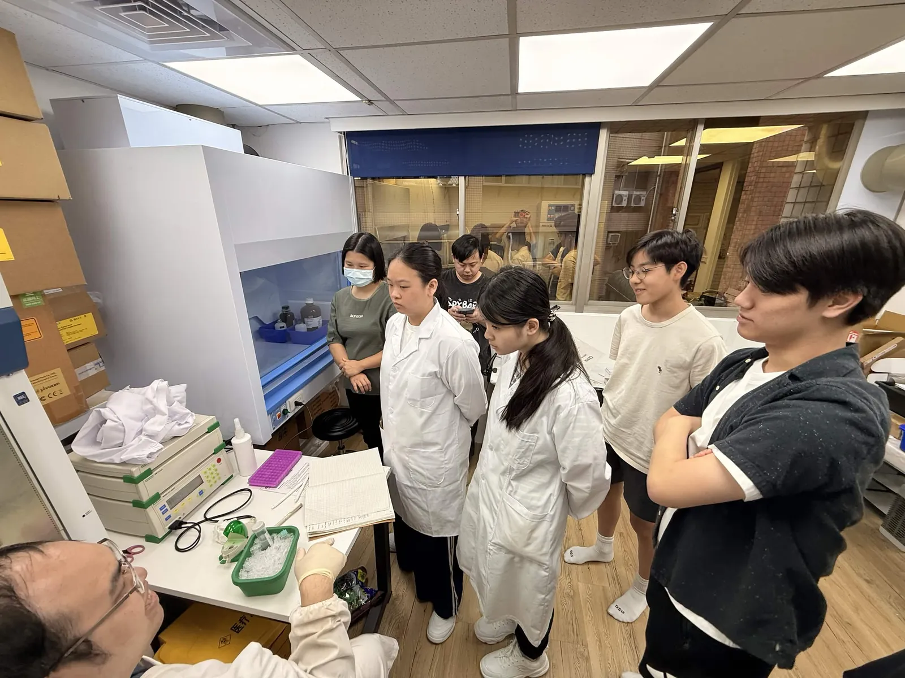
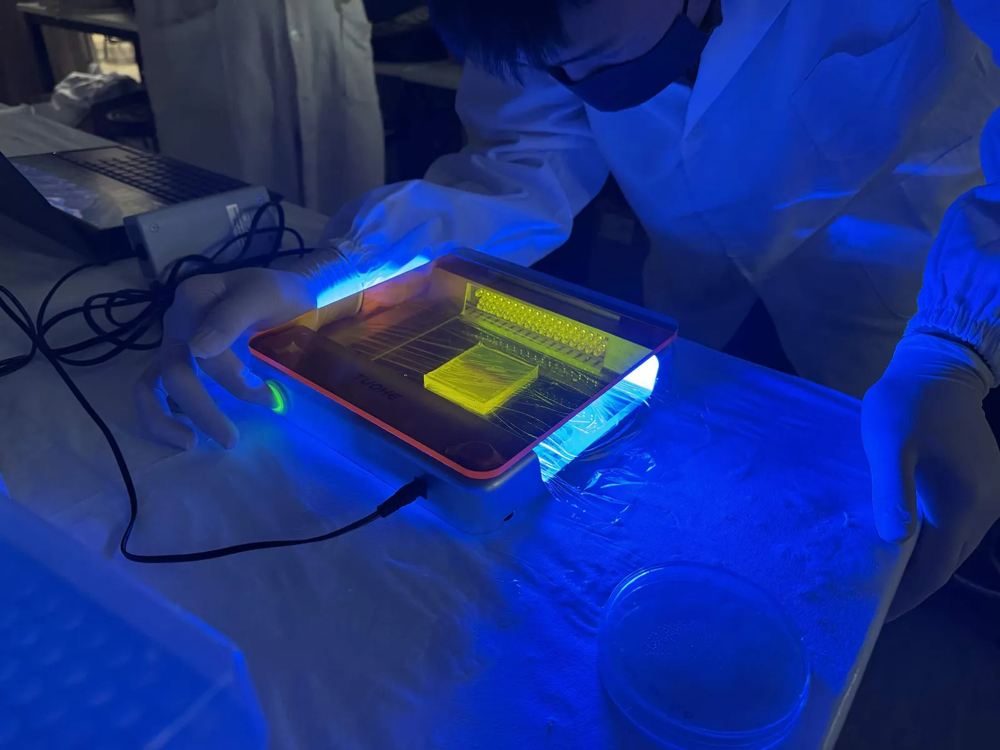
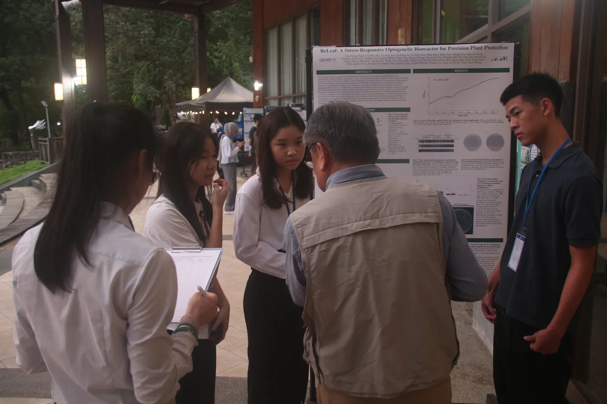

Photographs from the bench, the field and the road to Paris.
SectionTeam
Written byWhole team (draft assembled from other pages)
Last updated25 September 2026
StatusDraft
Contents
On this page
Everyone in these photographs has agreed to appear. The wiki is archived and stays public, so nothing here carries a face, a name or a location that its subject has not cleared.
Where these photographs come from
Every photograph here already appears on another page of this wiki,
where its caption says more about what was going on. Each caption below
gives the date and links back to that page. The photographs are in date
order, from March to September 2026.
Photographs not yet on any page come from iGEM2026_Images, filed by month. The naming convention is in that folder's README. Before the freeze they have to be re-hosted on static.igem.wiki, because the wiki blocks images served from anywhere else.
The year in photographs
March
27 March. The session with Prof. Cheng Mei-Chun that produced the design the team brought back in August. From Plants.
April
26 April. Three float plates cut for three reservoir sizes, before anyone knew which box would survive. From Plants.
May
16 May, the Farmer Expo (花博農民市集). Asking growers what goes wrong before saying what we build. From Human Practices.

17 May. Chloe walking the team through the published CcaSR device, the four modules the wet lab then had to build. From Engineering.

17 May. Learning electroporation, five days before the first voltage sweep. From Engineering.30 May. Making float plates by hand, before the printed version. From Plants.
June
7 June. Seeds onto plates and into the cold, with an instructor at each elbow. From Plants.

10 June. Reading a colony PCR on the blue transilluminator. From Engineering.20 June. Prof. Chen Wen-liang taking apart the auto-filling reservoir the team had proposed. From Plants.
July
9 July, CH Biotech (正瀚生技). The research wall, and the bottles it produced. From Plants.17 July. DiOPAL assembled, third iteration. From Results.20 July. The bioreactor running. From Results.21 July, Tamsui Happy Farm. The team with Ms. Chen Hui-wen. From Human Practices.
August
11 August, YesHealth smart farm (源鮮智慧農場). Our box, multiplied by about a thousand. From Plants.22 August. Marking pots before the salt ramp starts. From Plants.29 August. Forum preparation, a week out. From Plants.
September
5 September, Water Garden Organic Farmers’ Market. Interviewing stallholders on the day of the forum. From Human Practices.5 September. Explaining the reactor at the public forum. From Sustainability.

11 September. The poster session at NCHU. From Human Practices.
The people
Every member’s portrait is on Members.
Open a card there for that person’s profile, with a photograph of
them at work and a goofy one where they have sent it in.
Consent and credit
Who took each photograph, and where consent is recorded.
This page is a draft.
It was assembled on 25 September 2026 from photographs already on
other pages. Every italic note above is an instruction, not text to publish. Delete
each one as you replace it, delete this box when the page is written,
and set Status in the header to Draft and then
to Final. Re-running build/generate.py will not touch this
file once the generated marker at the top has been removed.